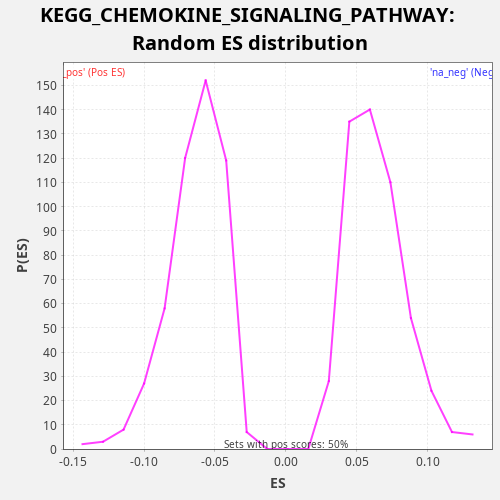

Profile of the Running ES Score & Positions of GeneSet Members on the Rank Ordered List
The same image in compressed SVG format
| Dataset | TCGA |
| Phenotype | NoPhenotypeAvailable |
| Upregulated in class | na_neg |
| GeneSet | KEGG_CHEMOKINE_SIGNALING_PATHWAY |
| Enrichment Score (ES) | -0.23121662 |
| Normalized Enrichment Score (NES) | -3.628354 |
| Nominal p-value | 0.0 |
| FDR q-value | 0.0 |
| FWER p-Value | 0.0 |
| SYMBOL | RANK IN GENE LIST | RANK METRIC SCORE | RUNNING ES | CORE ENRICHMENT | |
|---|---|---|---|---|---|
| 1 | GNAI1 | 195 | 4.772 | -0.0050 | No |
| 2 | PRKCD | 479 | 2.712 | -0.0147 | No |
| 3 | PIK3R2 | 482 | 2.708 | -0.0094 | No |
| 4 | IKBKB | 506 | 2.634 | -0.0051 | No |
| 5 | SHC2 | 656 | 2.067 | -0.0077 | No |
| 6 | WASL | 720 | 1.875 | -0.0056 | No |
| 7 | GNGT1 | 872 | 1.569 | -0.0082 | No |
| 8 | CXCR2 | 1022 | 1.319 | -0.0108 | No |
| 9 | PIK3R1 | 1398 | 0.889 | -0.0254 | No |
| 10 | VAV3 | 1579 | 0.763 | -0.0296 | No |
| 11 | PLCB1 | 2328 | 0.412 | -0.0643 | No |
| 12 | PRKCZ | 2410 | 0.384 | -0.0632 | No |
| 13 | FGR | 2652 | 0.313 | -0.0706 | No |
| 14 | SHC3 | 2676 | 0.305 | -0.0664 | No |
| 15 | PPBP | 2777 | 0.279 | -0.0663 | No |
| 16 | AKT1 | 3017 | 0.231 | -0.0737 | No |
| 17 | RAC1 | 3215 | 0.199 | -0.0788 | No |
| 18 | PXN | 3762 | 0.125 | -0.1026 | No |
| 19 | GNB5 | 3786 | 0.122 | -0.0984 | No |
| 20 | PTK2 | 3985 | 0.103 | -0.1035 | No |
| 21 | CDC42 | 4041 | 0.098 | -0.1010 | No |
| 22 | PAK1 | 4147 | 0.090 | -0.1012 | No |
| 23 | GRK4 | 4156 | 0.089 | -0.0962 | No |
| 24 | GRK7 | 4793 | 0.048 | -0.1248 | No |
| 25 | SHC1 | 4815 | 0.047 | -0.1205 | No |
| 26 | SOS2 | 5089 | 0.034 | -0.1297 | No |
| 27 | CXCL8 | 5127 | 0.032 | -0.1262 | No |
| 28 | CRK | 5171 | 0.031 | -0.1230 | No |
| 29 | FOXO3 | 5172 | 0.031 | -0.1176 | No |
| 30 | GNB2 | 5324 | 0.025 | -0.1202 | No |
| 31 | NFKB1 | 5350 | 0.025 | -0.1161 | No |
| 32 | PIK3R3 | 5367 | 0.024 | -0.1115 | No |
| 33 | ADCY6 | 5371 | 0.024 | -0.1062 | No |
| 34 | PLCB3 | 6319 | 0.006 | -0.1515 | No |
| 35 | GSK3B | 6343 | 0.005 | -0.1473 | No |
| 36 | HRAS | 6531 | 0.004 | -0.1519 | No |
| 37 | IKBKG | 6540 | 0.004 | -0.1468 | No |
| 38 | XCL1 | 6836 | 0.001 | -0.1572 | No |
| 39 | PRKACB | 6935 | 0.001 | -0.1570 | No |
| 40 | KRAS | 7093 | 0.000 | -0.1600 | No |
| 41 | GNG5 | 7179 | 0.000 | -0.1591 | No |
| 42 | GRK6 | 7308 | 0.000 | -0.1605 | No |
| 43 | STAT3 | 7649 | -0.000 | -0.1732 | No |
| 44 | SOS1 | 8078 | -0.002 | -0.1907 | No |
| 45 | GSK3A | 8112 | -0.002 | -0.1870 | No |
| 46 | RAP1B | 8261 | -0.003 | -0.1895 | No |
| 47 | CCL15 | 8484 | -0.006 | -0.1960 | No |
| 48 | CCL17 | 8586 | -0.007 | -0.1959 | No |
| 49 | STAT2 | 8764 | -0.009 | -0.2000 | No |
| 50 | STAT5B | 8795 | -0.010 | -0.1961 | No |
| 51 | CHUK | 8811 | -0.010 | -0.1914 | No |
| 52 | GNAI2 | 8895 | -0.011 | -0.1904 | No |
| 53 | RAC2 | 8946 | -0.012 | -0.1877 | No |
| 54 | CSK | 8993 | -0.013 | -0.1847 | No |
| 55 | CCL27 | 9188 | -0.017 | -0.1896 | No |
| 56 | GNG12 | 9402 | -0.022 | -0.1956 | No |
| 57 | PRKX | 9456 | -0.023 | -0.1930 | No |
| 58 | GNG13 | 9513 | -0.024 | -0.1905 | No |
| 59 | CCL3L3 | 9518 | -0.024 | -0.1852 | No |
| 60 | MAP2K1 | 9521 | -0.024 | -0.1799 | No |
| 61 | TIAM1 | 9532 | -0.025 | -0.1750 | No |
| 62 | AKT2 | 9574 | -0.026 | -0.1717 | No |
| 63 | CXCL1 | 9607 | -0.027 | -0.1679 | No |
| 64 | CXCL14 | 10182 | -0.046 | -0.1933 | No |
| 65 | PRKACA | 10308 | -0.052 | -0.1945 | No |
| 66 | PTK2B | 10310 | -0.052 | -0.1891 | No |
| 67 | PLCB4 | 10324 | -0.052 | -0.1843 | No |
| 68 | RELA | 10359 | -0.054 | -0.1807 | No |
| 69 | CCR9 | 10605 | -0.068 | -0.1884 | No |
| 70 | CRKL | 10624 | -0.069 | -0.1839 | No |
| 71 | PLCB2 | 10645 | -0.070 | -0.1795 | No |
| 72 | CX3CR1 | 11069 | -0.096 | -0.1967 | No |
| 73 | PRKACG | 11097 | -0.098 | -0.1927 | No |
| 74 | CCL22 | 11197 | -0.105 | -0.1926 | No |
| 75 | CCL1 | 11640 | -0.141 | -0.2108 | No |
| 76 | XCL2 | 11952 | -0.175 | -0.2220 | No |
| 77 | BRAF | 11955 | -0.175 | -0.2167 | No |
| 78 | CCL23 | 12150 | -0.199 | -0.2216 | No |
| 79 | MAPK1 | 12172 | -0.201 | -0.2173 | No |
| 80 | ADCY8 | 12345 | -0.226 | -0.2211 | No |
| 81 | GNB1 | 12394 | -0.232 | -0.2182 | No |
| 82 | GNAI3 | 12638 | -0.274 | -0.2258 | Yes |
| 83 | GNG3 | 12655 | -0.277 | -0.2211 | Yes |
| 84 | CCR10 | 12745 | -0.298 | -0.2205 | Yes |
| 85 | PRKCB | 12876 | -0.320 | -0.2220 | Yes |
| 86 | BCAR1 | 12976 | -0.342 | -0.2218 | Yes |
| 87 | NFKBIA | 13032 | -0.357 | -0.2193 | Yes |
| 88 | PF4 | 13104 | -0.371 | -0.2176 | Yes |
| 89 | STAT1 | 13110 | -0.373 | -0.2125 | Yes |
| 90 | PF4V1 | 13310 | -0.416 | -0.2177 | Yes |
| 91 | CCL16 | 13335 | -0.420 | -0.2135 | Yes |
| 92 | RHOA | 13383 | -0.433 | -0.2105 | Yes |
| 93 | CXCR1 | 13407 | -0.440 | -0.2063 | Yes |
| 94 | GNG7 | 13488 | -0.460 | -0.2051 | Yes |
| 95 | CCL21 | 13688 | -0.523 | -0.2104 | Yes |
| 96 | ROCK1 | 13698 | -0.525 | -0.2054 | Yes |
| 97 | MAPK3 | 14049 | -0.652 | -0.2187 | Yes |
| 98 | GRB2 | 14082 | -0.663 | -0.2150 | Yes |
| 99 | PIK3CA | 14086 | -0.665 | -0.2096 | Yes |
| 100 | NFKBIB | 14158 | -0.695 | -0.2080 | Yes |
| 101 | VAV1 | 14235 | -0.734 | -0.2066 | Yes |
| 102 | PARD3 | 14299 | -0.773 | -0.2045 | Yes |
| 103 | GNG11 | 14389 | -0.818 | -0.2038 | Yes |
| 104 | RAP1A | 14407 | -0.824 | -0.1993 | Yes |
| 105 | ROCK2 | 14457 | -0.853 | -0.1964 | Yes |
| 106 | GNG8 | 14503 | -0.876 | -0.1934 | Yes |
| 107 | ADCY3 | 14514 | -0.883 | -0.1885 | Yes |
| 108 | ADCY4 | 14524 | -0.886 | -0.1835 | Yes |
| 109 | RAF1 | 14590 | -0.926 | -0.1815 | Yes |
| 110 | VAV2 | 14714 | -0.993 | -0.1826 | Yes |
| 111 | CCL24 | 14827 | -1.074 | -0.1832 | Yes |
| 112 | XCR1 | 14930 | -1.140 | -0.1832 | Yes |
| 113 | JAK2 | 14973 | -1.170 | -0.1800 | Yes |
| 114 | PIK3CB | 15034 | -1.212 | -0.1777 | Yes |
| 115 | SHC4 | 15071 | -1.242 | -0.1742 | Yes |
| 116 | CX3CL1 | 15275 | -1.394 | -0.1796 | Yes |
| 117 | CCL13 | 15347 | -1.470 | -0.1780 | Yes |
| 118 | JAK3 | 15363 | -1.485 | -0.1733 | Yes |
| 119 | CCL14 | 15462 | -1.589 | -0.1731 | Yes |
| 120 | CXCL16 | 15525 | -1.655 | -0.1710 | Yes |
| 121 | NRAS | 15624 | -1.760 | -0.1708 | Yes |
| 122 | ADCY1 | 15663 | -1.802 | -0.1674 | Yes |
| 123 | GNG10 | 15714 | -1.865 | -0.1646 | Yes |
| 124 | TIAM2 | 15753 | -1.907 | -0.1611 | Yes |
| 125 | ELMO1 | 15905 | -2.116 | -0.1638 | Yes |
| 126 | CCL28 | 15922 | -2.136 | -0.1592 | Yes |
| 127 | PIK3CG | 15963 | -2.193 | -0.1559 | Yes |
| 128 | CXCL6 | 15971 | -2.205 | -0.1508 | Yes |
| 129 | GNGT2 | 15997 | -2.235 | -0.1467 | Yes |
| 130 | CCL20 | 16055 | -2.319 | -0.1442 | Yes |
| 131 | CXCR4 | 16062 | -2.341 | -0.1391 | Yes |
| 132 | ADCY9 | 16077 | -2.362 | -0.1344 | Yes |
| 133 | CXCL5 | 16205 | -2.574 | -0.1357 | Yes |
| 134 | GNB3 | 16217 | -2.591 | -0.1309 | Yes |
| 135 | GNG4 | 16394 | -2.924 | -0.1348 | Yes |
| 136 | ADCY5 | 16468 | -3.079 | -0.1333 | Yes |
| 137 | LYN | 16477 | -3.096 | -0.1283 | Yes |
| 138 | CCL7 | 16506 | -3.145 | -0.1243 | Yes |
| 139 | CCR6 | 16726 | -3.644 | -0.1306 | Yes |
| 140 | PREX1 | 16731 | -3.668 | -0.1253 | Yes |
| 141 | ADCY7 | 16761 | -3.754 | -0.1214 | Yes |
| 142 | CCL8 | 16812 | -3.850 | -0.1187 | Yes |
| 143 | CCL19 | 16814 | -3.856 | -0.1132 | Yes |
| 144 | CXCL12 | 16834 | -3.905 | -0.1088 | Yes |
| 145 | CCL3 | 17001 | -4.350 | -0.1122 | Yes |
| 146 | WAS | 17026 | -4.427 | -0.1081 | Yes |
| 147 | RASGRP2 | 17027 | -4.429 | -0.1026 | Yes |
| 148 | CCL18 | 17040 | -4.470 | -0.0978 | Yes |
| 149 | ADCY2 | 17043 | -4.476 | -0.0924 | Yes |
| 150 | GRK5 | 17107 | -4.703 | -0.0903 | Yes |
| 151 | CCL26 | 17122 | -4.752 | -0.0856 | Yes |
| 152 | PIK3CD | 17171 | -4.908 | -0.0827 | Yes |
| 153 | CCL25 | 17220 | -5.111 | -0.0798 | Yes |
| 154 | CCR7 | 17390 | -5.811 | -0.0834 | Yes |
| 155 | ITK | 17396 | -5.842 | -0.0783 | Yes |
| 156 | CXCR3 | 17401 | -5.862 | -0.0730 | Yes |
| 157 | CCL4 | 17564 | -6.586 | -0.0762 | Yes |
| 158 | CXCL2 | 17575 | -6.658 | -0.0713 | Yes |
| 159 | CCL11 | 17632 | -6.926 | -0.0688 | Yes |
| 160 | CXCR6 | 17659 | -7.049 | -0.0648 | Yes |
| 161 | ARRB2 | 17701 | -7.241 | -0.0615 | Yes |
| 162 | CCR1 | 17747 | -7.562 | -0.0585 | Yes |
| 163 | CCR3 | 17837 | -8.072 | -0.0578 | Yes |
| 164 | ARRB1 | 17877 | -8.265 | -0.0544 | Yes |
| 165 | CXCL13 | 17890 | -8.373 | -0.0496 | Yes |
| 166 | CCL2 | 17914 | -8.527 | -0.0454 | Yes |
| 167 | GNG2 | 17945 | -8.772 | -0.0415 | Yes |
| 168 | CCR4 | 17973 | -8.911 | -0.0375 | Yes |
| 169 | PIK3R5 | 18032 | -9.451 | -0.0351 | Yes |
| 170 | CXCL10 | 18064 | -9.663 | -0.0313 | Yes |
| 171 | CCR5 | 18080 | -9.764 | -0.0267 | Yes |
| 172 | NCF1 | 18082 | -9.814 | -0.0213 | Yes |
| 173 | CXCL3 | 18126 | -10.290 | -0.0181 | Yes |
| 174 | HCK | 18181 | -10.861 | -0.0155 | Yes |
| 175 | CCR8 | 18198 | -11.002 | -0.0109 | Yes |
| 176 | CCR2 | 18210 | -11.147 | -0.0061 | Yes |
| 177 | DOCK2 | 18425 | -14.144 | -0.0121 | Yes |
| 178 | CXCR5 | 18427 | -14.147 | -0.0067 | Yes |
| 179 | CXCL9 | 18429 | -14.155 | -0.0013 | Yes |
| 180 | CXCL11 | 18454 | -14.657 | 0.0029 | Yes |
| 181 | GNB4 | 18459 | -14.737 | 0.0082 | Yes |
| 182 | AKT3 | 18582 | -18.151 | 0.0071 | Yes |
| 183 | CCL5 | 18679 | -22.694 | 0.0074 | Yes |

{kind=link}
{kind=link}